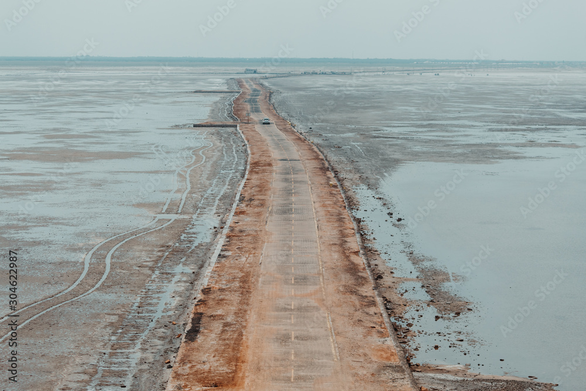
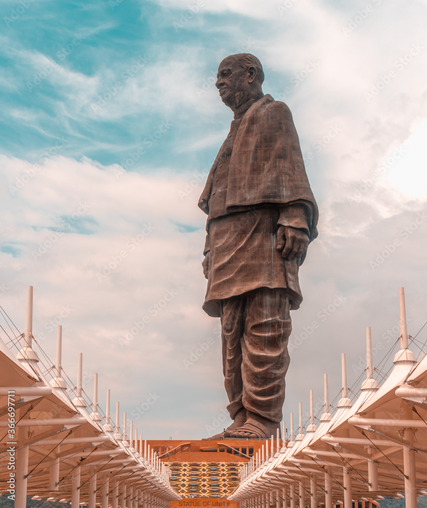

Gujarat is a state located on the western coast of India.
It shares its borders with the states of Rajasthan to the northeast,
Madhya Pradesh to the east, Maharashtra to the south, and the Arabian Sea to the west.
The capital city of Gujarat is Gandhinagar, while Ahmedabad is the largest city and the commercial hub of the state.
The primary language spoken in Gujarat is Gujarati. However, Hindi and English are also widely used

* Rann of Kutch: The Rann of Kutch is a large seasonal salt marsh located in
the Thar Desert in the Kutch district of Gujarat, India, and the Sindh province of Pakistan.
This region is known for its vast and flat expanses of white salt desert during the dry season and becomes
a shallow wetland during the monsoon season.

* Statue of Unity the Statue of Unity,dedicated to Sardar Vallabhbhai Patel, is located in the state of Gujarat.
The statue is situated on an island on the Narmada River, near the Sardar Sarovar Dam.
This colossal statue was inaugurated on October 31, 2018,
to mark Patel's contributions to the unification of India and to honor his legacy.
Additional Place in gujrat
* Ahmedabad: The largest city in Gujarat, Ahmedabad, is known for its rich history, vibrant culture
* Gir National Park: Located in the Junagadh district,
Gir National Park is the only place in the world where you can find the Asiatic lions in their natural habitat.
* Dwarka: Dwarka is a sacred city for Hindus and is associated with Lord Krishna
* Bhuj: This city is known for its historical architecture, including the Aina Mahal and Prag Mahal.
It's also a gateway to exploring the Kutch region.